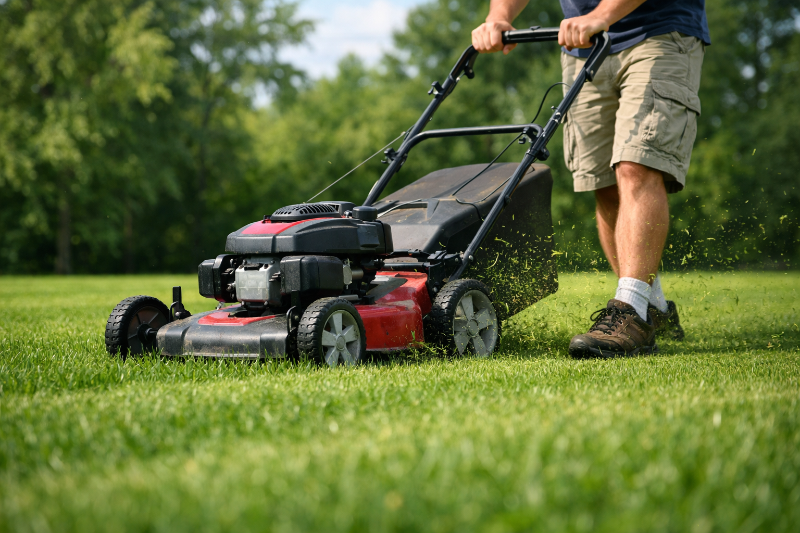

Our Services
Northern Texas Lawn Co. offers comprehensive lawn care services tailored for homeowners across Van Alstyne, Anna, Celina and the greater North Dallas–Fort Worth area. Below you’ll find details on each of our core services. If you don’t see what you need, please contact us and we’ll be happy to discuss your project.
Lawn Mowing & Edging

Proper mowing is the foundation of a healthy lawn. We use sharp blades and set the correct height for your grass type to encourage thick growth and minimize weeds. Leaving clippings on the lawn provides natural fertilization and improves soil quality. Our team also delivers crisp edging along sidewalks, driveways and garden beds for a neat, professional finish.
Weekly or Bi‑Weekly Service
Every lawn is different. Whether you need weekly mowing during the growing season or a bi‑weekly schedule, we’ll customize a plan to match your grass type, growth rate and desired appearance. Regular visits ensure your yard looks polished without the stress of fitting lawn care into your busy week.
Seasonal Cleanups
Spring and fall cleanups prepare your yard for the changing seasons. Seasonal cleanup helps shield your grass from smothering during winter, prevents pest infestations, enhances soil fertility and supports a healthy ecosystem. Our cleanup services include leaf and debris removal, shrub pruning, aeration and thatch control so your turf and plants can thrive when temperatures shift.
Landscaping & Plant Care
From refreshing flower beds to installing new shrubs, we’ll help you create a landscape that complements your home. Our plant care services include mulching, trimming and fertilizing so your plants remain healthy throughout the year. We’re also happy to recommend drought‑ tolerant options suitable for the North Texas climate.
Ready to transform your yard?
Get in touch today for a free estimate. We’d love to help you enjoy your yard without the yard work.
Request a Quote[1] Regular mowing with sharp blades at the proper height keeps grass growing vigorously and maintains adequate density, and leaving clippings on the lawn contributes to lawn nutrition【878802213752107†L59-L69】 【878802213752107†L87-L94】. These practices underpin our mowing and edging service.
[2] Seasonal cleanup helps shield grass from smothering during winter, prevents pest infestations, enhances soil fertility and supports a healthy ecosystem【416653374812537†L34-L38】. This research informs our spring and fall cleanup services.